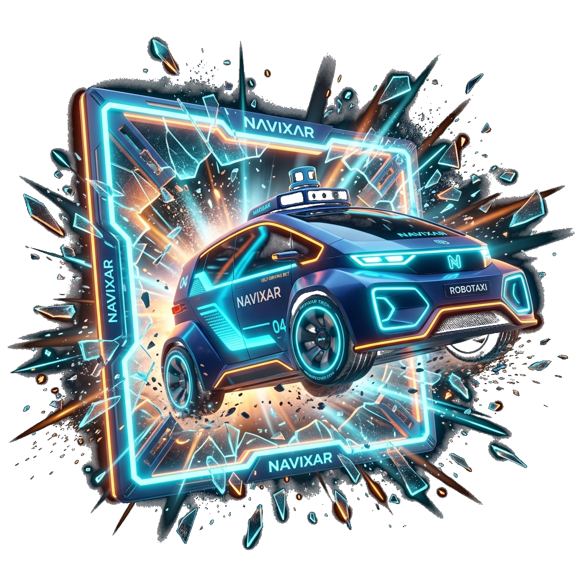

Every robotaxi company in the world skipped India.
Navixar is India's answer to the robotaxi revolution.
The world's robotaxi players have raised $21B+ and now operate in every major auto market but one. India, the world's 3rd largest auto market, still has zero. Navixar exists to be first.
$21.4B Raised. Not One In India.
$21B Everywhere Else. Zero In India. Why?
Algorithms (AI Models) are becoming more accessible. Data and Validation are not.
Drone capture, gamified crowdsourcing, and bulk dashcam acquisition are three ways to get Indian driving data fast, without waiting years on a sensor fleet.
Data AdvantageGaussian-splat reconstructions of real Indian streets let us stress-test millions of scenarios before a single vehicle drives one of them.
Simulation AdvantageDeploying a physical in-house robotaxi bot creates unmatched real-world presence, viral brand attention, and immediate validation across Indian cities.
Robotaxi Bot
Stand In An Indian Junction
For One Minute.
Effectively zero. The ADAS shipping in Indian cars today was designed and validated on structured Western and East-Asian roads. In junctions like this one, its features get detuned or switched off entirely. Nobody has built the stack for the road you just crossed. That gap is this company.